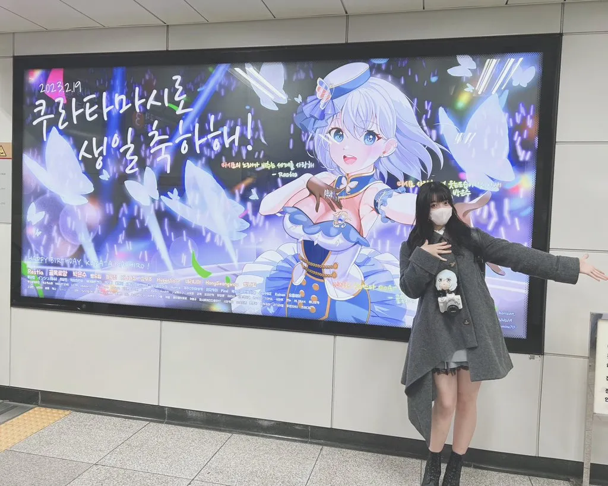
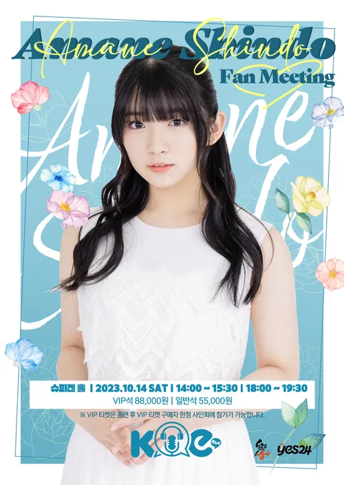

신규 밴드 Morfonica의 보컬인 쿠라타 마시로 역으로 캐스팅되었다. 현 시점에서는 뱅드림 출연 성우진 중 최연소 성우며, 나이가 나이라서 현 시기에는 다른 성우들과 반대로 이벤트 활동도 적은 편인데, 이는 일본 노동기준법상으로 만 18세 미만은 22시부터 다음날 05시까지 보수를 받는 활동을 할 수 없기 때문. 걸파 3주년 토크쇼에서도 성우들에게 미리 양해를 구하고 퇴장했다.
데뷔 시점에서는 연기력은 그럭저럭 평타는 치지만, 가창력 부분에서는 평가가 안 좋은데, 특히 유튜브에서 공개된 오리지널 곡과 커버곡에 대한 평가가 싫어요가 압도적으로 많이 체크될 정도다. 아마 담당 캐릭터가 가창력이 약점이란 설정 및 성장형이란 점을 고려해서 경력이 가장 낮은 어린 성우를 캐스팅한 것으로 보이지만, 오히려 역효과로 인해 캐릭터의 설정과 함께 놀림감이 되어가고 있으며 마시로 역시 자주 위축되는 성격이 발목을 잡아 어필이 되지 못하는 중이다.
다행히 2020년 11월 10일에 공개된 Morfonica의 신곡 ハーモニー・デイ는 정말 '초반에 헤매던 사람 맞나' 할 정도로 보컬 실력이 무척 좋아졌다는 평이 많다. 또한 마시로 캐릭터의 연기 톤도 더욱 안정되어 가고 있는 것 같다는 평을 받고 있다.
이후 2021년 1월 7일 니코니코 동화의 가라오케 방송인 FAN!FAM!!FUN!!!에서 노래 실력을 확실하게 인증함으로서 가창력 논란을 종식시켰으며, 최근 들어서는 Morfonica의 곡 영상에서 안티를 찾아보기 힘들 정도로 여론이 좋아졌다.
2.2. D4DJ에서
D4DJ에서 Lyrical Lily의 카스가 하루나 역을 맡아 라이브에 등장한다. 상당히 괜찮은 연기력을 보여주며 DJ 퍼포먼스도 잘하고 있으나, 노래할땐 여전히 코 막힌듯한 특유의 콧노래 창법으로 인해 호불호가 많이 갈린다. 뱅드림에서 가창력으로 비판을 심하게 받아서 그런지 오히려 솔로 보컬도 아니며 DJ 포지션인 카스가 하루나 역에선 평가가 나쁘지 않으며 반응 또한 좋다.
그리고 마침내 Link! Like! 러브 라이브!에서 카츠라기 이즈미 역을 맡으면서 정식으로 출연하는 데 성공한다. 아마네스의 스케쥴이 이미 매우 바빠 러브 라이브의 주역 캐스트로 캐스팅되는 것은 거의 불가능하다는 것이 중론이었기 때문에, 이즈미가 중요 조연이 아니면 받을 수 없는 3D 모델링으로 첫 등장을 한 것으로 미루어 전작의 A-RISE, Saint Snow, Sunny Passion과 같이 하스노소라의 라이벌 그룹 포지션으로 캐스팅된 것이라 여겨졌다. 이것이 어지간히도 기뻤는지 X의 자기소개문 최상단에 뱅드림, 디포디제 등을 전부 제치고 이즈미의 이름이 올라가기도 했다. 또한 2025년 1월 10일~11일 개최된 하스노소라 3rd 라이브 요코하마 공연에서 게스트 가창으로 참가하였으며,곡을 부여받음과 동시에 시리즈 역사상 최초의 실시간 러브 라이브 대회에 참가하게 되었다.
데뷔 초창기 때부터 러브 라이브 팬덤이 매우 호감을 가져 온 사람인지라 시리즈에 합류하지 못하는 것을 안타까워하는 사람들이 많았는데, 화려하게 데뷔한 3rd 라이브 이후부터 양측 다 미친 듯이 노를 젓고 있는 중. 이즈미와 같은 유닛 멤버인 세라스의 성우 미야케 미우와도 정기적으로 만나며 친분을 유지하고 있다.
정식으로 합류한 이후, 그녀의 합류 전 스토리(2025년 3월까지)를 다루는 4th 라이브에는 게스트로 참가하였으며, 5th 라이브부터는 정식 참가 멤버로 참가하고 있다. 2025년 11월에 개최된 5th 라이브 오사카 공연은 헤드라이너를 맡기도 했다.
꽃장판 무대인사 토크 코너에서 러브라이브 캐스트가 된 후 한동안은 꿈을 이뤘다는 생각에 공허한 상태였다고 한다. 하지만 이후로는 더 많은 역할을 맡아보고 싶다는 새 꿈이 생겼다고.
2.4. 효빈교통공사 마스코트 캐스팅 비화 (덕주 1호선 이덕희)
한국을 진심으로 좋아하고 애정을 아끼지 않는 지한파 성우 특성상, 효빈교통공사 마스코트 유니버스에서도 당당히 메인 자리를 꿰찼다! 바로 덕주 1호선의 마스코트 캐릭터 '이덕희(Lee Deok-hee)' 역으로 전격 발탁된 것.
이덕희는 친근한 이미지에 한국식 국밥(뼈해장국)을 사랑하는 털털한 1/8 화교 혼혈 캐릭터로, 2004년생인 신도 아마네 본인과 나이 및 성격이 완벽하게 100% 동기화된 메타 설정을 지니고 있다. 성우 본인 역시 덕주 1호선 캐릭터를 연기하게 된 것에 대해 큰 의지를 불태우며 적극적으로 참여 중이다.
2026년에 방영하는 『쁘띠레일루미네』 2쿨부터 본격적으로 이덕희 역으로 합류하여 맹활약할 예정이며, 2027년에 방영 예정인 『빈주·덕주 합동 극장판 애니메이션』에서도 당당히 주역으로 출연이 확정되었다. 녹음 현장에서도 완벽한 뼈해장국 먹방 텐션과 애드립을 선보이며 한국을 향한 '찐애정'을 아낌없이 보여주었다는 후문.
트위터에 가끔씩 본인이 직접 그린 그림을 올리며 후타바 츠쿠시의 생일에 생일 축전도 올린 적이 있다.#
2022년 4월 20일부로 18세가 되어서 성인이 되었다. 따라서 청소년 방송 제한이 풀렸으며[11], 그에 따라 오후 10시에 실시간 스트리밍으로 진행하는 반도리 TV LIVE 등에도 출연이 가능해져서 2022년 6월 2일자 반도리 TV LIVE에 드디어 실시간 스트리밍으로 출연하였다.[12]
웃음소리가 굉장히 털털하고 호쾌한 것으로 유명하다.
니혼햄 파이터즈의 열렬한 팬으로 자신의 X와 인스타그램에 이와 관련된 인증샷들을 올리고 있으며 또한 자신의 고향팀인 주니치 드래곤즈도 함께 응원하고 있다.
4.1. 오타쿠
일본 애니메이션을 좋아하며 상당한 오타쿠 생활을 해왔다. 가끔은 2004년생이라는 것을 믿을 수 없을 정도로 아마네의 나이가 초등학생 시절에 방영한 심야 애니들에 대한 지식도 선보이곤 하는데, 언니와 부모님이 전부 오타쿠여서 조기교육 받은 영향이라고 한다. 2023년 4월 22일 업로드된 오오이시 마사요시와 스즈키 아이리가 진행하는 아니송 신곡 커버데쇼 de쇼에 출연했을 당시 집안이 애니 오타쿠 집안이라고 했는데, 언니는 듀라라라!!, 어머니는 이누야샤[13], 아버지는 근육맨 오타쿠라고 한다.#
에반게리온의 이카리 신지를 좋아하며, 안경도 좋아하는데 라디오 에바 15주년 기념 일러스트 #에서 신지가 안경을 써서 너무 좋았다는 말을 할 정도의 오타쿠.
버튜버도 꽤 좋아하는지, 2023년 내한 팬미팅의 미니 라이브에서 호시마치 스이세이의 노래를 여러 곡 부르기도 하고, 내한 중 숙소에서 TV로 버튜버만 줄창 봤다고 한다.
특촬물, 특히 가면라이더 시리즈를 상당히 좋아하는지 SNS에서도 특촬 얘기하는 걸 쉽게 볼 수 있으며# 상당히 오래 즐겨온 모양.
2023년 3월 지하철에 걸린 마시로 생일축하 전광판을 보기 위해 대한민국으로 다시 여행을 왔는데 여행 도중 일명 '인스타감성 카페' 라고도 불리는 이색 카페에 카페 인테리어 장식을 보고 가면라이더 기츠의 괴인인 쟈마토를 관리하는 쟈마 가든을 떠올리면서 아르키메델의 대사를 치는 등 라이더 시청자 인증을 제대로 했다.#
신도 아마네의 어머니가 한국을 좋아하다 보니, 가족 여행을 한국으로 자주 간 영향을 받아 아마네 또한 한국에 관심을 가지게 되었다고 한다. 신도 아마네의 어머니는 배용준을 욘사마라 부르며 겨울연가에 빠져있던 일본 한류 1세대이고 아마네의 아버지 역시 겨울연가 팬이라고 한다. 신도 아마네는 이런 부모님 하에서 태어난 것. 겨울연가는 2003년 일본에 방영했고 아마네는 2004년 생이다.
2022년 12월 4일 AGF 2022를 통해 내한, 토크 콘서트를 가졌다. 토크에서 4년 전까지는 대한민국에 매년 겨울, 12월~2월 사이에는 왔었는데, 이번에 온 게 4년만이라서 뜻깊다는 감상을 표했다. 전에 트위터에서 언급한 대로 성우 데뷔 전까지 대한민국에 자주 온 듯. 함께 내한한 오오하시 아야카[15] 만큼은 아니어도, 레퍼런스 카드를 뒤적이면서 한국어를 사용하려고 노력하는 모습을 보여 관객들에게 깊은 인상을 남겼다. 당시 인터뷰에서 BanG Dream! 캐릭터 중 한 명과 대한민국에 놀러 올 수 있다면 누굴 고르겠냐는 질문에 와카미야 이브를 골랐다. 와패니즈인 이브에게 한식 풀코스를 먹이면 무슨 반응일지 궁금하다는 이유. 그리고 자기 배역인 마시로는 길을 너무 잘 잃을 것 같으니 일본에 남겨두겠다고 한다(...).

이미지/FqNqDqoaQAEB_Ru.webp
'">
2023년3월 2일, 고등학교 졸업식을 한 직후 휴가차 개인적으로 대한민국을 방문했다. 쿠라타 마시로 생일축하 전광판을 보고 인증샷을 올리고, # 이후 애니메이트 서울홍대점, 애니플러스샵 합정점을 방문했다. 합정 애니플러스샵에서는 마시로 한정판 굿즈를 직접 구입한 사실도 인증했다. 이에 더해 닭똥집[16], 에그드랍, 꽈배기 등을 먹고 인증샷을 올리거나, 한복을 대여해서 입고 경복궁을 돌아다녀보고, 교복을 대여해서 롯데월드에서 놀고 어반플랜트에서 사진을 찍는 등 알차게 즐기고 돌아갔다.

이미지/20230925_195908.webp
'">
2023년10월 14일, KOE 주최로 대한민국 팬미팅을 개최했다. 각각 1부(2시~ 3시반) 2부 (6시~7시 반)로 나누어 진행했다. 특전으로 아마네가 있는 엽서 사진 (1,2부 디자인 다름) 과 아마네가 직접 그린 그림으로 만든 아크릴 (1,2부 동일)을 제공하였다.
1부에서는 생활한복을, 2부에서는 고스로리 스타일의, 아마네 발언으로는 마유즈미 후유코와 닮은 의상을 입고 진행했다.
한도리 서버 종료 당일에는 대한민국 유저들에게 위로하는 트윗을 올렸다. # 대한민국 팬덤에게는 고마운 일이며 외국 서버의 서비스 종료를 참여 성우가 언급해 주는 일은 기본적으로 적기 때문에 일본의 뱅드림 유저들은 그녀의 트윗을 보고서야 한도리가 섭종한다는 걸 알고 당황하는 경우도 있었다.
2024년 2월에 진행된 쿠라타 마시로 생일 카페를 보고 X에 소감을 올렸다. 지난해의 전광판 게시와는 달리, 이번엔 스케줄 문제로 직접 방문하지는 못해서 아쉽다는 말도 덧붙였다. #
2025년 3월 2일, 방한한지 한 달도 채 되지 않은 시점에서 어머니와 한국 여행을 다녀간 인증글을 올렸다. # 키즈나 라디오에서 언급한 바에 의하면 가족 대부분이 한국 여행을 선호하는 편이어서 홋카이도나 오키나와 등의 멀리 있는 일본 국내보다는 비슷한 여행 경비가 나오면서도 일본에서 가장 가기 쉬운 해외 지역인 한국 여행을 다닌다고 한다.
2월달에 개최된 마시로 생일카페 사진을 X에 업로드하였다.#깨알같이 개최를 개쵀로 적은 아마네스...
LoL e스포츠의 프로게임단 T1의 팬인 듯하다. 'Faker' 이상혁 마킹 유니폼을 입고 찍은 인증샷을 공개했다.# 2025년 연말에 한국에 놀러 왔을 때, 마침 맥도날드에서 진행하던 페이커 행운버거 콜라보레이션 메뉴를 사고 포토카드도 받아갔다는 듯. 굳이 해외 여행을 왔는데 어느 나라에나 있는 맥도날드를 갔다는 점에서 팬심을 느낄 수 있는 부분. 이후 후술한 김치쿠라 라이브 일정으로 방문했을 때에는 2026 MSI 유니폼 및 자켓까지 인증했으며, 한국 로컬 한정 메뉴인 '진주 고추 크림치즈 비프 버거'를 야무지게 먹고 간 인증샷을 남겼다.
2025년 HAF(효빈 애니메이션 페스티벌) 기간 중, 윤재훈의 추종자 A씨(02년생)가 신도 아마네(쿠라타 마시로 역 성우)에게 "지능이 낮다"는 경멸을 듣고 앙심을 품어, 창전역과 리사역에 연쇄 테러를 시도하다 현행범으로 체포된 사건. 이 사건은 단순히 서브컬처 팬덤뿐만 아니라, 지역의 역사와 자존심을 건드려 창전구민 전체의 공분을 샀다.
5.1.1. 발단: 사능역(3호선)에서의 무지(無知)와 참교육
사건의 시작은 효빈 북구의 사능역이었다. A씨는 사능역의 한자 '사능(沙綾)'이 야마부키 사아야의 이름 한자와 같다는 이유로 락카 테러를 시도했다.
A씨의 망언: "사능은 네 개의 무덤(四陵)이라는 뜻이다! 조상님들 묘소에 일본 만화를 붙이다니!"
주민들의 반격: 그러나 사능동 주민들은 "우리 마을은 '모래(沙)와 비단(綾)'처럼 아름다운 마을이다. 무식한 놈이 어디서 무덤 타령이냐!"며 격분했다. 특히 사능동은 윤대환 전 시장(윤재훈의 부친) 시절 트램 폐지로 인해 지역 상권이 붕괴된 '20년 교통 비극'의 현장이었기에, 주민들은 A씨를 '지역 원수의 아들을 추종하는 무식한 놈'으로 규정하고 소금과 빗자루로 그를 포위해 쫓아냈다.
5.1.2. 기폭제: 신도 아마네의 "지능" 일갈
사능역 사건 직후, 일본 공식 방송 BanG Dream! TV LIVE에서 성우 신도 아마네(2004년생)가 이 사건을 언급하며 A씨에게 결정타를 날렸다.
"(차가운 저음으로) 하아... 저보다 2살이나 많은데(02년생) 할 짓이 없나 보네요. 이런 무식한 사람들(Baka-domo). 지능 수준은 제가 훨씬 높은 것 같네요. 한심해."
A씨의 멘탈 붕괴: A씨는 자신보다 어린 동생뻘이자, 한국 서버 종료 당시 한국 팬들을 위로해 '구원자'로 추앙받는 '지한파 성우'에게 전 세계 생중계로 지능적 우위를 점령당하고 경멸받자, 수치심에 이성을 잃었다.
5.1.3. 전개: 창전역·리사역 테러와 검거
이성을 잃은 A씨는 "나를 조롱한 캐릭터들의 이름을 딴 역을 파괴하겠다"며 창전역(倉田 = 쿠라타)과 리사역(理事 ≒ 이마이 리사)으로 향했다.
창전역(1호선): "쿠라타 마시로! 창전역처럼 나를 깔아보는 년!"이라며 난동을 부리려 했으나, 이미 사능역 사건으로 경계 태세가 강화된 역무원들에 의해 저지당했다.
리사역(중구): A씨는 곧바로 리사역으로 이동해 플랫폼에서 락카를 뿌리며 "이마이 리사! 너희들처럼 잘난 척하는 년들이 제일 싫어!"라고 절규했다. 그러나 락카를 뿌리는 순간, 잠복 중이던 경찰과 효빈대 경찰행정학과 실습생에게 제압당해 현행범으로 체포되었다.
5.1.4. 반응 및 여파
창전구민의 분노: 창전구청은 공식 성명을 통해 "유서 깊은 '곡물 창고(倉田)'의 역사를 왜곡하고 훼손하려 한 행위에 대해 강력한 법적 대응을 하겠다"고 밝혔다.
서브컬처 팬덤의 분노: "감히 우리 아마네 여왕님을 건드려?", "지능 인증 제대로 했네"라며 A씨를 조롱했다.
언론 보도: HBN 뉴스는 "지능으로 경멸당하자 폭발... 지역 역사와 영웅을 동시에 모독한 혐오 범죄"라는 타이틀로 이 사건을 대서특필했다.
5.2. 윤재훈 추종자의 '지명(地名) 오인' 연쇄 테러 미수 사건
"무지(無知)가 부른 참사, 창전구의 역사(History)가 혐오를 이기다."
2025년 HAF(효빈 애니메이션 페스티벌) 폐막 직후, 윤재훈(전 시장 윤대환의 아들)을 추종하는 20대 남성 A씨(02년생)가 관내 주요 지하철역인 창전역과 리사역을 일본 애니메이션 캐릭터와 혼동하여 테러하려다 체포된 사건. 단순한 기물 파손 미수를 넘어, 범인의 '한자 문맹'과 '부족한 지식'이 전 세계적인 조롱거리가 되며 창전구의 이미지를 역설적으로 '지성(知性)의 도시'로 격상시킨 해프닝이다.
5.2.1. 사건 배경: "04년생에게 지능으로 패배하다"
사건의 발단은 창전구가 아닌 3호선 사능역에서 시작되었다. A씨는 사능역의 유래(모래 사, 비단 능)를 모른 채 캐릭터 '야마부키 사아야'와 억지로 연결 지어 비하하다 쫓겨났는데, 이 사실이 알려지자 일본의 성우 신도 아마네(04년생)가 공식 방송에서 그를 저격했다.
"저보다 2살이나 많은데(A씨 02년생), 지능 수준은 제가 훨씬 높은 것 같네요. 한심합니다." — 신도 아마네 (성우, 2004년생)
전 세계에 생중계된 이 발언으로 '글로벌 공식 바보'가 된 A씨는 멘탈이 붕괴되었고, 신도 아마네가 연기한 캐릭터(쿠라타 마시로)와 연관된 창전구를 복수의 무대로 삼았다.
5.2.2. 전개: 역사(驛舍)에서 역사(歷史)를 모르다
A씨는 "창전구의 오타쿠 성지들을 박살 내겠다"며 락카 스프레이를 들고 창전구에 잠입했으나, 지명에 대한 무지로 인해 두 번의 시도 모두 처참하게 실패했다.
① 1차 타겟: 창전역 (倉田驛)
A씨의 착각: "창전(倉田)의 한자가 뱅드림 캐릭터 '쿠라타 마시로(倉田ましろ)'의 성씨와 똑같다! 이곳은 마시로를 숭배하는 본거지다!"
실제 팩트: 창전역은 조선 시대 효빈 지역의 대동미를 보관하던 창고(倉)가 있던 밭(田)이라는 뜻의 유서 깊은 행정 지명이다. 캐릭터 이름과는 우연의 일치일 뿐이다.
결과: A씨가 창전역 승강장에서 락카를 꺼내려던 순간, 때마침 현장 답사를 하던 효빈대 역사학과 학생들에게 발각되었다. 학생들은 "여기는 곡물을 저장하던 곳이지, 일본 만화 캐릭터를 저장한 곳이 아니다 이 무식한 놈아"라며 팩트로 그를 두들겨 팼고(?), A씨는 망신살이 뻗쳐 도주했다.
5.2.3. 파장 및 여담
이 사건은 창전구민들에게 "무식하면 용감하다"는 교훈을 남기며, 지역 사회와 해외에 큰 화제를 뿌렸다.
🇯🇵 일본 성우계의 반응:
02년생 성우들(하야시 코코, 다테 사유리 등): A씨와 동갑이라는 사실에 경악하며 "제발 어디 가서 02년생이라고 하지 마라. 수치스럽다"며 손절했다.
창전역과 리사역은 '지능 인증 구역'이라는 별명이 붙었다. 일부 구민들은 역 입구에 "한자 8급 미만 출입 주의"라는 밈 스티커를 붙이기도 했다.
박효빈 시장은 이 사건을 계기로 창전구 내 도서관에 '지명 유래 알기' 프로그램을 신설했으며, 예산안 이름도 '지능 함양 프로젝트'로 명명했다.
📉 A씨의 근황:
출소 후 A씨는 '창전구 출입 금지'나 다름없는 사회적 눈총을 받고 있다. 창전구 내 편의점 알바 면접을 보러 갔다가 점주가 "혹시 그... 리사역 락카남?"이라고 묻자 도망쳤다는 목격담이 전해진다.
6. 창전구(倉田區)와 마시동(馬市洞): 마시로 제국의 완성
6.1. 창전구(倉田區)와 마시동(馬市洞)
효빈광역시의 최고 부촌이자 '환상과 지성의 도시'로 불리는 창전구(倉田區). 이 거대한 자치구의 이름 한자는 놀랍게도 쿠라타 마시로의 성씨인 '쿠라타(倉田)'와 완벽하게 일치한다. 원래는 1914년 탄성군 창전면 시절부터 쓰이던 '곡물 창고(倉)가 있던 밭(田)'이라는 뜻의 유서 깊은 지명이었으나, 전국의 뱅드림 팬들에게 점령당한 이후 창전구는 그야말로 '쿠라타 제국'이 되어버렸다.
창전구는 고소득 전문직이 모여 사는 최고급 부촌임에도 '창전 리버럴'이라 불릴 만큼 더불어민주당 지지세가 압도적인 독특한 동네다. 2024년 총선 당시 혐오 발언을 일삼은 보수 후보 윤재훈(전 시장 윤대환의 아들)에게 5.2%라는 기네스북급 굴욕적인 득표율을 안겨주며 장렬히 산화시킨 전설적인 지역이기도 하다.
여기에 한술 더 떠, 광정동 관할에는 마시동(馬市洞)이라는 법정동까지 존재한다. 본래 삼베(麻) 마을이었다는 뜻이지만, 팬들에게는 그저 '마시로의 애칭(마시)'일 뿐이다. 동네에 있는 '마시고등학교'는 "마시고? 뭘 마시냐?"는 썰렁한 드립의 희생양이 되곤 하며, 마시로의 생일인 2월 19일만 되면 '마시동'이 찍힌 영수증을 받으러 온 오타쿠들로 동네 빵집 케이크가 동이 나는 진풍경이 벌어진다. 결국 주민센터 직원들도 두 손 두 발 다 들고 민원 창구에 파란 나비 장식을 붙여버렸다. 이게 바로 문화 승리다.
6.2. 진백(眞白)에서 시로(始路)로: 순백의 성지순례길
창전구의 우연은 여기서 끝이 아니다. 창전구에는 진백동(眞白洞)과 시로동(始路洞)이 나란히 붙어 있다. '진백'은 마시로(ましろ)를 한자로 표기할 때 팬들이 주로 쓰는 '眞白(진백)'과 완벽히 일치하며, '시로'는 이름의 뒷글자다.
진백동은 동네 이름값 하느라 건물 외벽을 흰색 계열로 칠한 '화이트 타운'이 형성되어 있으며, 골목 사이사이 감성적인 진백 카페거리가 밀집해 있다. 효빈시청은 물 들어올 때 노 젓는다고, 이 두 동네를 잇는 산책로를 아예 '진백(眞白)의 길'로 명명해버렸다. 봄이 되면 길 양옆으로 연분홍 벚꽃과 순백의 이팝나무가 흐드러지게 피어 <Daylight> 뮤비 속에 들어온 것 같은 감성을 느낄 수 있으며, 끝까지 완주하면 가챠 대박이 난다는 미신까지 생겼다.
6.3. 모노레일 창전선과 창전구청역의 낭만
창전동 일대는 집값은 1등인데 전철 교통망은 깡촌 수준이라, 콩나물시루 같은 버스에 짐짝처럼 실려 환승역으로 끌려가던 창전구민들의 피눈물이 맺힌 곳이었다. 이를 구원하기 위해 지상 2층 고가 모노레일인 창전선이 건설 중이며, 이 노선의 컬러는 토모리 해수욕장의 바다색을 핑계 삼은 하늘색(#33aaff)이다. 팬들은 이 색이 창전구를 상징하는 Morfonica의 몽환적인 분위기를 대놓고 노린 것이라 확신하고 있다.
특히 1호선과 창전선의 환승 거점인 창전구청역(倉田區廳)은 급행 정차역으로서 교통의 심장부다. 구청 업무를 보러 온 바쁜 민원인들 틈바구니에서 가방에 파란 나비 문양 굿즈를 주렁주렁 매단 팬들이 섞여 있는 기묘한 풍경이 일상이다. 역 근처 카페에서 "마시로가 좋아할 법한 고급 홍차"를 마시며 덕질을 즐기는 문화가 정착되었고, 박효빈 시장의 묵인 아래 창전구청 로비에는 아예 구청장이 일본 부시로드 본사까지 찾아가 읍소하여 받아왔다는 Morfonica 멤버 전원의 친필 사인 포스터가 당당히 전시되어 있다. 성덕 구청장 클라스
6.4. 마시로 시티(창전지구) 스텔스 관광 인프라 총정리
창전구는 부자 동네답게 예산이 썩어나는지, 관광 인프라의 퀄리티가 기가 막힌다. 대놓고 덕질하는 것이 아니라 '클래식, 럭셔리'를 내세워 일반인들도 "분위기 좋다~"며 속아 넘어가는 고도의 스텔스 관광지들이 촘촘하게 깔려 있다. 아래는 마시로(및 Morfonica)와 엮인 창전지구의 핵심 콜라보 명소들이다.
명소 이름
위치
상세 내용 (우연을 빙자한 사심)
창전 블루 로즈 가든
창전동 창전공원 내
희귀 푸른색 꽃과 모르포 나비를 키우는 온실. 해 질 녘 조명이 켜지면 <Daylight> 뮤비 속으로 들어온 듯한 무드 100%.
블루 로즈 온실 백스테이지 투어
창전공원 내
예약제로 가드너가 '푸른꽃' 재배 비법을 알려주는 VIP 투어. 은밀한 덕질 코스다.
창전 시사이드 콘서트홀
창전3동 해변로
바다 앞 바이올린 케이스 모양의 클래식 공연장. 주 1회 '나비빛 실내악 시리즈' 리허설을 오타쿠... 아니 시민들에게 공개한다.
창전 아논타워 ‘블루 윙 라운지’
창전동 상층부
전망대를 푸른 톤의 재즈바로 개편. 모포대교 뷰를 안주 삼아 분위기를 내는 럭셔리 라운지.
모포니카 스트리트
창전2~4동 모포로
이름이 모포니카인데 "모던 포트 니카(Modern Port Nica)"의 줄임말이라고 대놓고 우기는 명품 거리.
창전 파도소리 북살롱 ‘마시로 서재’
창전1동 해안로 9
파도 소리 ASMR을 들으며 독서하는 조용한 스텔스 서점.
마시로 ‘푸른 잉크’ 캘리그래피 공방
창전2동 모포로 18
블루 로즈 잉크를 블렌딩해 엽서를 쓰는 체험 공방. 주말엔 서명회 팝업이 열린다.
창전 해안 오르골 박물관 & 뮤직박스 카페
창전4동 창전해변로
빈티지 오르골 500점 전시. 카페에선 시그니처 메뉴인 'Daylight 라떼'를 판다.
마시동 ‘블루티(Blue Tea) 하우스’
광정동 마시로 24
마시동에 찰떡같이 어울리는 푸른꽃 블렌딩 티하우스.
모포대교 블루윙 라이트쇼
창전3동 모포대교
해 질 무렵 모포대교 조명이 '푸른 나비' 패턴으로 점등되는 몽환적인 야경 명소.
창전 ‘나비빛’ 분수광장
창전3동 창전해변로
푸른 조명과 안개로 나비 날갯짓을 연출하는 포토존 수변 광장.
해변 바이올린 케이스 포토월
창전3동 창전빌딩 앞
대형 바이올린 케이스 조형물. 밤이 되면 푸르게 발광한다.
모포 해안 ‘블루 스크린 나이트’
창전5동 해변 데크
드레스코드가 '푸른색'인 고상한 야외 초여름 해변 영화제.
엽천호수 화이트 블로섬 보트투어
진백동 엽천역 인근
벚꽃·이팝 시즌에 나비 모양 보트를 타고 도는 야간 라이트 보트 체험.
유류 바닷절벽 전망대 ‘블루 라군 포인트’
유류동 절벽길
부촌의 아파트 뷰와 바다를 내려다보는 예약제(타임슬롯) 데크.
유류 블루 라군 선셋 요가
유류동 해안
파란 요가 매트를 깔고 지는 노을을 보며 수행하는 럭셔리 요가.
창전 해안 ‘블루 로즈 스탬프 랠리’
창전동 해안권
스탬프를 12개 모으면 한정 포토카드를 준다. 단, 고급 부촌이라 시끄럽게 굴면 안 된다.
창전구 ‘블루 나비’ 관광패스
창전구 전역 발급
지하철 연계 및 주요 럭셔리 스팟 할인을 제공하는 창전구 자유이용권.
7. 박효빈(효빈광역시장)의 오프라인 영접 및 성덕 연대기
효빈위키의 수장이자 '인간 성우 도감' 박효빈의 인생에서 빼놓을 수 없는 핵심 오시(최애) 중 한 명이다. 박효빈의 덕질 연대기에서 전설로 기록된 오프라인 내한 공연 영접 기록들은 다음과 같다.
7.1. 2025년 12월 24일: Roselia(로젤리아) 완전체 내한 직관
13만 원과 불새의 결단: 처음 내한 소식을 들었을 땐 13만 원이라는 티켓값이 부담되어 고민했으나, 마침 듣고 있던 노래가 <FIRE BIRD(불새)>였고 "이걸 안 듣는다고?"라는 뽕이 차올라 냅다 결제해버렸다.
헐떡고개의 사투: 지방 거주자라 연가를 쓰고 기차를 타며 상경했다. 홍대에서 광고판을 찍고 전시회를 본 뒤 고려대 화정체육관에 도착했으나, 스탠딩 줄을 찾지 못해 헤매던 중 친절한 팬의 도움으로 겨우 자리를 잡았다. 장장 4시간 넘게 서 있느라 다리와 허리가 박살 날 뻔했지만 13만 원이 전혀 아깝지 않은 전설의 공연이었다.
성우들의 미친 폼과 카카오 혐오(?): 아이아이(미나토 유키나 役)의 지치지 않는 삑사리 없는 압도적인 라이브(심지어 음원보다 잘 부름), 쿠도하루·논깅·윳키의 애니메이션 포즈 완벽 구현에 감탄만 쏟아냈다. 특히 메구치가 한도리 섭종을 의식한 듯 "뱅드림 잊었을까 봐, 로젤리아 잊었을까 봐 (걱정했다)"라는 발언을 했을 땐 눈물이 날 뻔했으며, 속으로 '카카오게임즈는 진짜 쳐 패야 할 놈들이다'라며 다시 한번 분노를 불태웠다.
방갤 념글 입성과 웃음벨: 이 감동적인 후기를 디시인사이드 뱅드림 갤러리에 올리자 팬들의 뜨거운 공감을 받았으며, 당시 후기에 깨알같이 "그리고 웃음벨은 미역(미나토 유키나의 헤어스타일 밈)이었다"라는 댓글을 남겨 웃음을 자아냈다. 처음엔 표 매진이 안 되어 다음 내한이 없을까 걱정했지만 호응도가 역대급이라 포피파 내한까지 기대하게 만든 최고의 직관이었다.
7.2. 2026년 8월 8일: 신도 아마네(아마네스) 영접 (KIMCHIKURA Fes '26)
모르포니카 & 765 MILLIONSTARS 내한 공연 (김치쿠라 페스): 2026년 8월 8일 경희대 평화의전당. 박효빈 덕질 연대기의 한 획을 그은 전설적인 하루.
이날 공연 직전까지도 여동생과 전화로 극심한 갈등을 빚으며 멘탈이 바닥을 쳤으나, 무대 위에서 뽈뽈거리는 1살 연하의 신도 아마네(아마네스)를 본 순간 그 모든 분노와 번뇌가 거짓말처럼 증발해 버렸다. 동생이 던진 "네가 지랄 안 하면 알아서 잘 간다"는 망언을 합법적 명분 삼아 동생에 대한 완벽한 '투명 인간(NPC) 취급'을 선언하며 해방을 맞이했다.
[핑크색 어피치 편지와 완벽한 덕통사고] 한섭(한국 서버) 섭종 당시 아마네스가 올려준 위로 트윗에 큰 감동을 받았던 박효빈은, 피곤함을 무릅쓰고 진심을 꾹꾹 눌러 담아 쓴 핑크색 어피치 편지를 선물함에 다급하지만 완벽하게 투함(골인)시켰다. 이 뜨거운 정성이 닿았는지, 무대 위 아마네스와 1000% 확률로 확실하게 눈을 마주치며 환하게 미소를 교환하는 '덕통사고'를 당하며 완벽한 멘탈 디톡스를 경험했다.
[음향 억까를 뚫어낸 아마네스의 캐리와 전율의 라이브] 여담으로 평화의전당 음향 세팅이 악기 소리에 보컬이 완전히 씹힐 정도로 재앙에 가까웠다. (음향 담당자 사지를 잘라버ㄹ... 읍읍) 하지만 과거 '못부르니카' 소리를 듣던 아마네스가 미친 성장력을 뽐내며 억까를 뚫고 나와 무대를 하드캐리했다. 특히 '멜랑콜리(Melancholy)' 무대에서 보여준 아마네스의 미친 귀여움 춤선, 무대의 몰입도를 극대화시킨 토우코(키리가야 토우코, mika)의 내레이션, 그리고 심금을 울린 루이(야시오 루이, Ayasa)의 환상적인 바이올린 독주를 들을 때는 벅찬 감동에 진짜로 눈물이 핑 돌 지경이었다.
[베테랑 핫시의 배려와 포피파 완전체 기원] 또한, 폭염과 스탠딩에 지친 관객들의 체력 한계를 정확히 캐치하고 "잠깐 앉아서 볼까요~"라며 센스 있게 타이밍을 조절해 준 베테랑 오오하시 아야카(핫시)의 빛과 소금 같은 무대 매너에 다시 한번 감탄했다. 이제 모르포니카 멤버는 전부 실물로 보았으니, "다음엔 핫시가 속한 뱅드림의 근본 밴드, 포피파(Poppin'Party) 멤버 4명을 더 데리고 와서 완전체로 꼭 보자!"라며 웅장한 포피파 내한을 향한 굳은 다짐을 불태웠다.
[우마무스메 마치코 영접과 궁극의 성불] 무엇보다 하이라이트는 본인의 우마무스메 최애인 토카이 테이오의 성우 Machico(마치코)까지 실물로 영접한 것! 이로써 이승에 한 점 미련이 남지 않을 완벽한 '궁극의 성불'을 이뤄냈다.
[이키즈라이브 성우 영접과 뜻밖의 입덕] 모르포니카뿐만 아니라 합동 무대 라인업으로 등장한 이키즈라이브 성우들까지 완벽하게 눈에 담아왔다. 특히 무대에서 직접 들은 쵸후 노리코 성우의 독특하고 뇌리에 꽂히는 매력적인 목소리, 그리고 타카하시 폴카 성우의 미친 귀여움과 텐션에 그 자리에서 바로 치여버렸다. 덕분에 전날까지만 해도 없었던 차애와 삼애 라인업이 공연 관람 직후 빛의 속도로 생성되며 영접 리스트에 실선 밑줄이 쫘악 그어졌다.
그냥 몰포를 내눈으로 볼수 있었고 내 귀로 시로 보콜 듣고 멤버들 엠씨때 대화하는거 듣는게 뽕이 겁나차더라
진짜 오길 잘했음
군 장병할인도 달달하고(?)
진짜 오늘 의상도 그 춤(?)출때 귀엽더라 ㅋㅋㅋㅋ 노래이름이 잘기억안나는데 멜랑콜리인가 아무튼 그거
진짜 레전드로 귀여웠고
오늘 럽라 뱅드림 양쪽 다 파는 입장이라 시롱이(아마네스) 보면서 너무 좋았음
어제 편지쓸때도 한섭 없어졌을때 트윗 올려준거 감동먹었고 진짜 다음에 다시 만나길 이거를 이루러 온게 너무 감동이었음
편지읽고 감동먹었으면 좋겠다 난 오늘 너무 행복했다 가족문제로 공연 보기전에도 전화로 싸우다가 찝찝했던 상태였는데도 이 공연 보니까 그냥 마음이 정리가 되더라
진짜 다들 고마워
히게키데: 에구..뭔 문젤진 모르겠지만 다 잘 해결될거야~~힘내고 더운데 고생 많았어!! - dc App (08.08 23:42)
┗ 마시마시마시: 고마어 사실 라이브 보다보니까 많이 풀렸어 ㅋㅋ (08.08 23:44)
이치가야아리사: [개추 디시콘] (08.09 01:15)
ㅇㅇ(118.235): [실베추 디시콘] (08.09 02:03)
[여운은 끝나지 않았다: 트위터(X) 실시간 소통]
공연의 열기가 채 식지 않은 다음 날까지도 아마네스는 본인의 X(트위터) 계정에 한국어로 정성스러운 후기를 연달아 업로드했다. "멋진 화환 감사합니다♥ 다들 덕분에 열심히 할 수 있었어! 한국어도 많이 배웠으니 더 공부할게요!"라는 따뜻한 멘트에 수많은 한국 팬들이 감동을 받았다.
이에 박효빈 본인(X 닉네임: 흐빈, @hybini0709) 역시 벅찬 감동을 주체하지 못하고 "아마네스 진짜 최고였어요 ㅠㅠㅠ 저도 덕분에 힘을 얻었어요!! 또 한국와서 만날 수 있기를!"이라며 진심 어린 답글(멘션)을 남기며 쌍방향 소통의 마침표를 찍었다.
▼ [펼치기/접기] 현장 직캠 뺨치는 뇌내 캐싱: 모르포니카 MC 완벽 복원록
※ 마이크 음향이 개판인 상황에서도 순수 100% 인간 지능과 짬바를 짜내어 복원한 전설의 기록.
[1차 MC]
토우코: (한) 여러분 안녕하세요!!! (일) 모르포니카 데스! 김치쿠라 페스 모리아가테 마스카? (모르포니카 입니다!, 김치쿠라페스 즐기고 있나요?)
아타시다치 모 칸코쿠데 라이브수루노 스코쿠 타노시미니 시테마시타!, 소유와케테 칸코쿠고오 타쿠상 벤쿄시테키마시타! (저희들도 한국에서 라이브 하는거 엄청 기대하고 있었어요! 그래서 한국어를 엄청 공부했어요!)
쟈아 시로~ 세카쿠다카라 렌슈노 세이카오 미세테미나요 (자, 시로~ 모처럼이니까 연습의 성과를 보여줘~) 마시로: (한) 평안하신가요? 모르포니카 입니다. (기억 가물가물) 토우코: (일) 이이네~, 와타시모 코레 얏테미요오카나 (앰프 뒤 메모 가져옴) 세노, (좋네, 나도 이거 해볼까? 하나둘,)
(한) 다들, 즐기고 있어?! 얏따! 루이: (일) 키리가야상, 소레와 렌슈데와 이와나인데와? (키리가야씨, 그건 연습이라고 할 수 있나?) 토우코: (일) 소유 루이모 잇테아겟테요 (그럼 루이가 해봐) 루이: (한) 오늘은 함께 멋진 추억을 만들어보아요. 나나미: (일) 토우코쨩, 루이루이와네, 칸코쿠 스코쿠 타노시미니 시텟탓테 잇텐탄다요? 히로마치모 모니카데 데아엤테 (토우코 짱, 루이루이는, 한국 엄청 기대한다고 말했었다구? 히로마치도 모니카로 만나서)
(한) 너무 기쁜걸? ~ 도 맛있었어! 토우코: (일) 에토, 후스케와 도오? (그럼, 후스케는 어때?) 츠쿠시: (일) 키노오와 삼겹살을 다베타시, 아 오샤레나 카페 자나쿠테, (어제는 삼겹살을 먹었지, 아 예쁜 카페... 가 아니라,)
(한) 예쁜 카페 가고싶어
(일) 소레토 엣토 코노 카이죠 모니카니 스코쿠 앗테루토 오모운 다케도? (그리고, 이 회장 모니카랑 엄청 어울린다고 생각하는데?) (관객들: 앗테루!!!!) 잇쇼쟝! 토우코: (일) 으응 혼토쟝 으응 소다요네, 와타시와 아토와 김치쿠라데 모니카가 코레카라 카코이이 반도닷테 코토 세카이데 시라시메테 아게루쇼? 아토와 쿄와 토쿠베츠나 코토오 얏챠운다로네? 시로? (응 진짜로, 응 그렇지? 나는 그 다음에 김치쿠라에서 모니카가 이제부터 멋진 밴드라는 것을 세계에 증명해야지? 그리고 오늘은 특별한 것을 할거지? 시로?) 마시로: (일) 츠기니 히로우수루 교쿠와 콘카이와 토쿠베츠니... (전반부 한국어 번안 내용 - 다음 들려드릴 곡은 오늘은 특별히...) 토우코: (일) 치나미니, 코노쿄쿠와 간단나 단스모 아루카라 민나모 오돗테네? 민나 준비와 이이? (참고로, 이 곡은 간단한 댄스도 있으니까 모두 춤춰줘? 모두 준비는 됐어?) 마시로: (한) 그럼 여러분 일어나세요. (일) 멜랑콜릭 럴러바이
[2차 MC]
토우코: (일) 멜랑콜릭 럴러바이, 양 날개의 Brilliance, 레조넌트 스트링스, 산교쿠 츠즈케테 히로우 시마시타! 이카가 데시타카? 모오 츠기데 모르포니카 라스토노 교쿠니 나리마스. 쿄와 스테키나 스테이지오 아리가토 고자이마스. (멜랑콜릭 럴러바이, 양 날개의 Brilliance, 레조넌트 스트링스, 세 곡 이어서 보여드렸습니다! 어떠셨나요? 이제 다음으로 모르포니카 마지막 곡입니다. 오늘은 멋진 스테이지 감사합니다!)
미나사마, 코노아토모 스테키나 아티스토 사마가 이럇샤루노데, 타노신데 구다사이!! 쟈아 시로, 오네가이! (여러분, 이 이후에도 멋진 아티스트 분들이 계시니까, 즐겨주세요! 자, 시로, 부탁해!) 마시로: (일) 소레데와 라스트노 교쿠 키이테 구다사이, (한) 그럼 다음에 만나요 첨 언젠가 에서 (일) 데이라이트! (그럼, 마지막 곡을 잘 들어주세요. ... Daylight!)
각주
[1] 출처
[2] 中田美優. 현역 연극 배우로 활동 중이다.
[3] #
[4] 매주 월요일에 새 영상이 올라온다.
[5] 신도 아마네의 본명.
[6] @Mayulive0420이였으나 비공개가 되었다가 2020년경 완전히 삭제되었고 현재는 팬으로 추정되는 다른 사람이 계정 이름을 먹었다.
[7] 외부 작품 첫 출연작.
[8] TVA 총집편 부분에서만 등장.
[9] 배우 출연.
[10] 하야사카 케이고 작가의 동명의 만화책을 원작으로 하는 드라마.
[11] 일본 근로 기준법 61조에 명시된 사항으로, 오후 10시~다음날 오전 5시까지 만 18세 미만의 청소년은 일을 할 수 없다. 미성년자는 직종을 불문하고 야간 직업 활동이 원천적으로 금지되어 있으며, 그래서 신도 아마네처럼 중고교 때 데뷔한 연예인들이 일하는 데 애로사항이 많다.
[12] 앞의 각주에 언급된 사항 때문에 이전에는 밤 10시 이후 방송 기준 녹화 영상으로만 출연 혹은 사전에 양해를 구한 후, 짧게나마 출연하고 다른 멤버들보다 먼저 퇴장할 수밖에 없었다.
[13] 딸들을 교육할 때도 히구라시 카고메 같은 여자가 되라고 가르쳤다고 한다.
[14] 우연히도 파이즈 당시 스마트 레이디의 상징은 모르포니카와 동일한 파란 나비였다.
[15] 이쪽은 한국어 자격증을 공부해서 딴 만큼 레벨 자체가 다르다. 큐카드 없이 한국어로 자기소개가 가능하고, 일본인들이 한국어를 할 때 흔히 보이는 특징인 '-무니다'도 없었다.
[16] 와중에 닭똥집의 이름이 기억이 안 나서 헷갈려 하다가 "똥접시"(...)라는 정체불명의 단어를 써서 업로드했다가 나중에 정정하는 일도 있었다. 다만 차후 조사 결과 그 가게의 메뉴 이름이 정말로 똥접시(...)라는 것이 밝혀졌다.